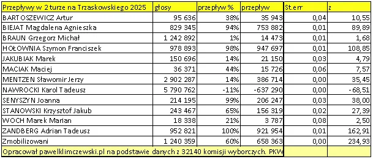

Kogo zgubiła tęcza a komu pasuje brunatna koszula.
Bez głosów Brauna Nawrocki by nie został prezydentem. Wygrał jedynie 369 591 głosami. Braun "przekazał" 99% swego elektoratu Nawrockiemu czyi około 1,2 mln głosów. Mentzen przekazał blisko 400 000 głosów Trzaskowskiemu, takie to było piwo. Gdyby tylko 1/3 wyborców Brauna została w domu wygrałby Trzaskowski, a to było zupełnie realne bo elektorat Brauna zgodnie uważa, że "PiS i Po jedno zło", mobilizacja odbyła się pod hasłem wyboru mniejszego zła.

Przepływy obliczone są na podstawie rozkładów i zmian głosów we wszystkich +-32 00 komisjach wyborczych metodą regresji wielorakiej. Nie ma tu żadnych sondaży, respondentów i ich deklaracji. Metoda bije na głowę sondaże, które koszmarnie zawodzą szczególnie przy kandydatach kilku procentowych. Np. taka pani Biejat, 4%, w próbie n=1000 ma około 40 osób. W sondażu na podstawie tych 40 odpowiedzi szacuje się przepływy. De facto próbą dla wiersza "Biejat" w sondażu jest 40 osób. W mojej analizie protokołów mamy 829345 głosów na Biejat, które równanie regresji musi być rozłożone pomiędzy Trzaskowskiego i Nawrockiego. Dlatego w publikacjach przepływów z głównego ścieku są zupełnie inne liczby.
Po dogłębnej analizie przepływów głosów we wszystkich 32140 komisji podsumowując wybory 2025 nasuwa się jeden wniosek. Wyborów nie wygrał Nawrocki, a przegrał je Trzaskowski swą nachalną, lewicową postawą obyczajową. Polacy są lewicowi w sferze ekonomicznej, stąd tak duża popularność socjalistycznego PiS określającego się prawicą pod figowym listkiem katolicyzmu. Ich program i działania nie zostawiają złudzeń, że jest to partia narodowo socjalistyczna paradoksalnie próbująca ubrać Brauna w brunatną koszulę.
Paweł Klimczewski